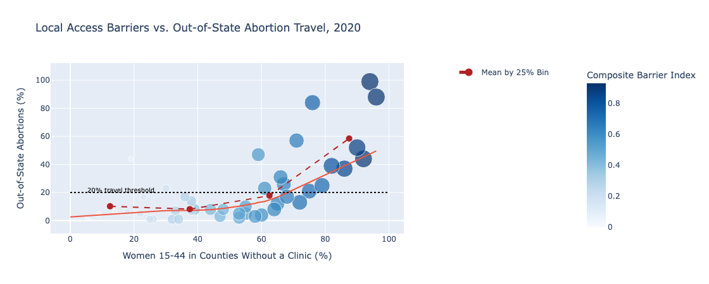
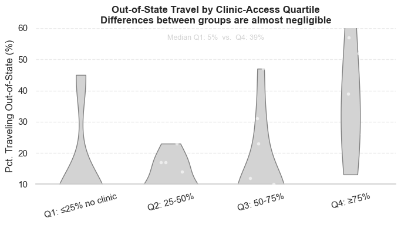

Proposition: States where a larger share of women aged 15-44 live in counties without an abortion clinic tend to have higher percentages of residents traveling out of state for care.
FOR the Proposition

Design Decisions and Rationale:
- Bin-Means Overlay: Binned the x-axis into four equal (25 %) intervals, computed the mean out-of-state travel rate in each bin, and overlaid them as a dashed-red line + markers to make the aggregated trend explicit.
- LOWESS Trend Line: Kept the smooth LOWESS curve underneath the bin means to reveal the continuous, non-linear rise in travel as clinic access falls.
- Size & Color Encoding: Mapped the Composite Barrier Index to both point size and hue, so darker, larger points cluster in the top-right, reinforcing that high-barrier states tend to have higher travel rates.
- Threshold Annotation: Drew a dotted horizontal line at 20 % travel, labeled directly on-chart as “20 % travel threshold,” to frame anything above as noteworthy.
AGAINST the Proposition

Design Decisions and Rationale:
-
Quartile Binning: Used
pd.qcutto group states into four equal-sized categories (≤ 25 %, 25-50 %, 50-75 %, ≥ 75 % without clinics), an advanced transform that aggregates the continuous measure into interpretable bins. - Y-Axis Truncation: Limited the plotted range to 10-60 %, so each violin nearly fills the frame and the modest median gap (e.g., 30 % vs. 32 %) appears negligible at first glance.
- Neutral Grayscale & Subtle Annotation: Employed light gray violins and white jitter points to avoid drawing the eye with color, and placed a faint median note at the top—tactics that mask the small actual difference.
Final Reflection
In the “for” visualization, I used overt, earnest encodings—bin-means, LOWESS, size & color mapping, and a clear threshold annotation to transparently reveal the positive correlation. This makes things easy to interpret but also drive the reader toward the desired conclusion.
The “against” chart subverts this by applying subtler, borderline-deceptive techniques. Although quartile binning is a valid data transform, truncating the y-axis and using neutral grayscale hide meaningful variation. The small median annotation is so faded that it's easily missed. Ethically, these decisions illustrate how even minor styling or scale adjustments carry persuasive power. We should try balance clarity with persuasion and guard against inadvertently misleading our audience.